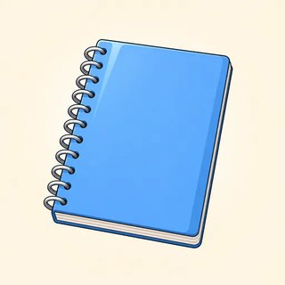

Fluency & Style — Classroom Materials
Everything to print for Classes C10–C12: linker, emphasis and topic flashcards, the linker sort, the Argument Builder kit, the Plain → Dramatic rewrite cards, the Set the Record Straight A/B cards, emphatic-opinion prompts, the C12 presentation topics with side, persona and question cards, the C12 speaking checklist (feeds C13), the Module 1–4 Review Race board game, and the teacher's listening scripts.
What to Print
| Set | What | How many | Used in |
|---|---|---|---|
| A | Flashcards: linkers, emphasis frames, trade-off topic pictures | 1 set for the board | C10, C11, C12 |
| B | Linker sort cards (18 linkers + 3 column headings) | 1 set per pair | C10 (sort), C11 warmer (linker tennis), C13 station |
| C | Argument Builder: 6 topic cards, 36 point cards, 12 linker play cards, listener tally | 1 kit per group of 3 (1 topic + its points + 12 linker cards + 1 tally) | C10 |
| D | Plain → Dramatic rewrite cards (12) | 1 set per pair | C11 (and C13 station) |
| E | Set the Record Straight A/B cards (4 pairs) | 1 pair of cards per pair of learners | C11 |
| F | Emphatic-opinion prompts (8) | 1–2 sets on a side table | C11 |
| G | Presentation & discussion: 10 topic cards, side cards, persona cards, question starters, talking tokens | Topics on a side table · 1 set of side cards + tokens per group of 4 | C11 homework, C12 |
| H | C12 speaking checklist: descriptors, class grid, score slips | 1 grid for you · 1 slip per learner | C12 → C13 |
| I | Module 1–4 Review Race (board game) | 1 board per group of 3–4 + a die + counters | C12 warmer, C13 station |
| J | Listening & dictation scripts | Teacher only | C10, C11, C12 |
A · Flashcards — Linkers (4.1)
Stick each linker in the right column of the board plan: + clause · + noun / -ing · new sentence. The small line tells learners what comes next. Tip: print the three groups on three colors of card so the grammar is visible from the back of the room.
A · Flashcards — Emphasis Frames (4.2)
Hold up a frame and say a plain sentence; learners reshape it. The inversion cards go in a separate row labeled "formal / dramatic." Literacy-support learners can keep the first three cards on the desk as a model.
A · Flashcards — Trade-off Topics (4.1, 4.3)
Put the topic pictures on the board during the Argument Builder and the C12 planning, so groups can see the choices. They also work as a quick warmer: hold one up; learners give one advantage and one drawback, linked.



B · Linker Sort Cards (4.1 · C11 warmer)
C10 sort: pairs put the three heading cards in a row and sort the 18 linkers underneath, then say one quick sentence for each card. C11 linker tennis: cards face down; A says a clause, B turns a card and continues with the right grammar. Keep one set per pair in an envelope. (The key is in the Answer Key, 4.1.)
C · The Argument Builder — Topic & Point Cards (4.1)
One topic per group of 3. Cut each topic's six point cards; the shaded ones are FOR, the white ones AGAINST. In Round 1, A takes the FOR cards and B the AGAINST cards; nobody argues their own opinion. The notes are deliberately short: learners turn them into linked sentences. Topics avoid politics, religion and immigration on purpose; please keep it that way if you add your own.
Topic 1 · Working from home is better than working in an office.
Topic 2 · Life in the city is better than life in the countryside.
Topic 3 · Social media does more good than harm.
Topic 4 · Shops should stop accepting cash.
Topic 5 · Children in elementary school shouldn't get homework.
Topic 6 · Learning online is as good as learning in a classroom.
C · The Argument Builder — Linker Play Cards & Listener Tally (4.1)
12 cards per group. Deal 4 to each speaker at random (the listener gets none in Round 1). A speaker puts a card down when they use that linker with the right grammar after it. The listener decides: "✔" or "Check the grammar!"
Listener tally (1 per group; the listener fills it in)
| Speaker | Contrast linkers ✔ | Cause linkers ✔ | Result linkers ✔ | "Check the grammar!" | Best sentence I heard |
|---|---|---|---|---|---|
My verdict (Round 1): "Although ___ made a good point about ___, ___ convinced me more because ___."
D · Plain → Dramatic Rewrite Cards (4.2)
Pairs, cards face down. Draw a card and say two versions aloud: the one on the hint, and a cleft of your choice. The partner says "✔" or "Say the question first!" (for inversions). Model answers are in the Answer Key, 4.2.
E · Set the Record Straight — A/B Cards (4.2)
Pairs. A reads the wrong "facts" as confident questions. B corrects each one with an it-cleft, then adds the what-cleft on the card. Swap roles with a new pair of cards. All situations are invented.
You think…
- Sam organized the party.
- It was on Saturday.
- The pizza was the problem.
Ask: "So Sam organized the party, right?"
The facts
- Nadia organized it.
- It was on Friday.
- The music was the problem.
Add: "What Sam did was bring the music!"
You think…
- The washing machine broke.
- Your partner called the repair person.
- It was fixed on Monday.
Ask: "So the washing machine broke?"
The facts
- The dryer broke.
- The upstairs neighbor called the repair person.
- It was fixed on Tuesday.
Add: "What I did was hang everything outside to dry."
You think…
- Your partner's mom planned the trip.
- They went by car.
- Everyone loved the beach.
Ask: "So your mom planned the trip?"
The facts
- Your brother planned it.
- You went by train.
- Everyone loved the museum.
Add: "What we didn't expect was the rain."
You think…
- Ms. Diaz got the manager job.
- The new manager started in January.
- The first thing they changed was the dress code.
Ask: "So Ms. Diaz got the job?"
The facts
- Mr. Park got the job.
- He started in March.
- The first thing he changed was the schedule.
Add: "What everyone likes is the new break room."
F · Emphatic-Opinion Prompts (4.2)
Keep these on a side table. Learners may choose their own everyday topic instead. The shape is on each card: frame → correct a common view → build up → (one inversion to close).
Something about public transportation that should change
The thing that… · People think it's… but it's… that… · What we really need is… · Never have I…
A movie or show everyone should watch
The reason I love it is… · It's the… that makes it special · What surprised me was… · Not only… but also…
The most useful app on my phone
All I need is… · It was my friend who… · What it does is… · Rarely do I…
A small habit that makes a big difference
The thing that changed my week was… · It's not… that matters, it's… · What I do now is…
The best advice I've ever received
It was my… who told me… · What they said was… · Only later did I…
An underrated place in this town
The place where… is… · People think… but it's… that… · Never have I…
Something that should be free for everyone
The reason… is… · What we can't forget is… · Not only would it…, but it would also…
A change I'd love to see at work or school
What really bothers me is… · It's the… that… · All I'm asking for is…
G · Presentation & Discussion — Topics, Sides, Personas, Questions, Tokens (4.3)
Put the topic cards on a side table at the end of C11 so learners can choose one for homework. In C12, each discussion group takes one topic's question. Presenters may argue either side; in the discussion, the side card decides.
Our workplace should try a four-day week.
Discuss: Would a four-day week work for every kind of job?
Phones should stay off the table during family meals.
Discuss: Should there be phone-free times at home?
Shops should be allowed to go cashless.
Discuss: Who wins and who loses if cash disappears?
Elementary school children shouldn't get homework.
Discuss: How much homework is the right amount?
Self-checkout machines are better than cashiers.
Discuss: Should supermarkets keep a cashier line?
Learning online is as good as learning in a classroom.
Discuss: What can a classroom give you that an app can't?
Every town should have free bikes to borrow.
Discuss: Is it worth the cost?
Big stores should close on Sundays so staff can rest.
Discuss: Is shopping on Sunday a need or a habit?
It's better to rent a home than to buy one.
Discuss: When does renting make more sense?
Everyone should learn to cook before they leave home.
Discuss: Whose job is it to teach young people life skills?
Side cards (one set of 4 per group; deal face down)
🎙️ You are the chair
- Open: "Today's question is… Let's hear the first side. ___?"
- Round 1: 45 seconds each, in order. Use a phone timer.
- Round 2: "Building on that… ___, where do you stand?"
- A long turn? "Thanks. Let's hear the other side."
- Round 3: "On the one hand… on the other hand… Most of us felt…"
🎙️ You are the chair
- Open: "Today's question is… Let's hear the first side. ___?"
- Round 1: 45 seconds each, in order. Use a phone timer.
- Round 2: "Building on that… ___, where do you stand?"
- A long turn? "Thanks. Let's hear the other side."
- Round 3: "On the one hand… on the other hand… Most of us felt…"
Persona cards (optional; take one to speak from a different point of view)
Question starters for listeners (one per listener after each talk)
Talking tokens (3 per learner; coins or paper clips also work)
Put one token in the middle every time you speak in Round 2. No tokens left? Listen until everyone has used theirs; then everyone takes 3 again.
H · C12 Speaking Checklist — Present, Argue & Discuss (feeds C13)
Score each learner's whole performance across the presentation, the Q&A and the discussion: five criteria, 0–3 points each, total /15. 0 = no response · 1 = not yet B2 · 2 = B2 · 3 = strong B2 (moving toward C1). Score what a patient listener understands, not an accent. Tick M1–M4 when you hear a structure from that module used correctly. Write one sentence you heard in the notes column; it makes the slip easy to write.
| Criterion | 3 | 2 | 1 | 0 |
|---|---|---|---|---|
| 1 · Task & organization | Opening + preview, 2–3 points each with a reason and an example / evidence, a real conclusion; signposts guide the listener. Discussion turns are relevant and developed | Clear structure but thin support, or signposts missing in places; discussion turns mostly relevant | A list of ideas with little structure; short, undeveloped turns | No talk or contribution yet |
| 2 · Range (Modules 1–4) | Structures from 3–4 modules, used naturally and without prompting; varied linkers; a well-placed cleft or inversion | Structures from 2 modules; some variety in linkers | 1 module; mostly B1 grammar (because, but, I think) | Single words, phrases |
| 3 · Accuracy | Good control; occasional errors, rarely affect meaning, often self-corrected | Some errors in complex structures, meaning clear | Frequent errors; the listener must work hard | Meaning often lost |
| 4 · Interaction & discussion moves | Concedes before countering; hedges appropriately; responds to the last speaker; invites others; handles challenges calmly | Uses 2–3 discussion moves; responds when addressed | Agrees / disagrees bluntly or not at all; rarely responds to others | No interaction |
| 5 · Fluency & pronunciation | Even pace, natural pauses at signposts; stress highlights key and contrasting information | Some hesitation while searching for language; mostly clear | Many pauses; hard to follow | Can't continue without help |
| Tick | What counts (correct use) |
|---|---|
| M1 | past perfect / past perfect continuous in a narrative · third and mixed conditionals (If we had…, we wouldn't be…) · wish / if only / would rather / it's time |
| M2 | gerund vs infinitive after verbs (stop doing, afford to) · past deduction (must have / might have / can't have) · used to / be used to / get used to |
| M3 | advanced & impersonal passive (It is widely believed that…, is said to…) · relative & participle clauses (Having considered…) · reporting verbs + pattern (suggest doing, insist on, warn someone not to) |
| M4 | contrast / cause / result linkers with the right grammar · it- / what-clefts · negative inversion · signposting and concede-and-counter phrases |
Copy each learner's total and module ticks to the class register. In C13, send each learner to the catch-up station for any module with no tick, or for their lowest criterion: no M1 → narrative & hypotheticals station · no M2 → verb patterns & modality station · no M3 → passive, clauses & reporting station · no M4 → linkers & emphasis station (Sets B and D of this pack) · criterion 4 ≤ 1 → discussion-moves station (Workbook 4.3 Ex 1 and 5 + a 3-minute concede-and-counter round) · criterion 5 ≤ 1 → shadowing station (the 🔊 model sentences in online lessons 4.1–4.3) or the Review Race (Set I). Learners you didn't hear in C12 present to you at a station in C13.
Class grid
| Name | 1 Task | 2 Range | 3 Accur. | 4 Inter. | 5 Fluency | /15 | M1 | M2 | M3 | M4 | C13 station | Notes (a sentence I heard) |
|---|---|---|---|---|---|---|---|---|---|---|---|---|
| ☐ | ☐ | ☐ | ☐ | |||||||||
| ☐ | ☐ | ☐ | ☐ | |||||||||
| ☐ | ☐ | ☐ | ☐ | |||||||||
| ☐ | ☐ | ☐ | ☐ | |||||||||
| ☐ | ☐ | ☐ | ☐ | |||||||||
| ☐ | ☐ | ☐ | ☐ | |||||||||
| ☐ | ☐ | ☐ | ☐ | |||||||||
| ☐ | ☐ | ☐ | ☐ | |||||||||
| ☐ | ☐ | ☐ | ☐ | |||||||||
| ☐ | ☐ | ☐ | ☐ | |||||||||
| ☐ | ☐ | ☐ | ☐ | |||||||||
| ☐ | ☐ | ☐ | ☐ | |||||||||
| ☐ | ☐ | ☐ | ☐ | |||||||||
| ☐ | ☐ | ☐ | ☐ | |||||||||
| ☐ | ☐ | ☐ | ☐ | |||||||||
| ☐ | ☐ | ☐ | ☐ |
Learner score slips (cut; give one to each learner in C13)
My B2 Speaking Check (C12) · Name: ______________
Task ☐ · Range ☐ · Accuracy ☐ · Interaction ☐ · Fluency ☐ Total: ____ /15
Grammar I used: M1 ☐ · M2 ☐ · M3 ☐ · M4 ☐
⭐ Well done: ___________________________
➡️ My next step: ________________________
My B2 Speaking Check (C12) · Name: ______________
Task ☐ · Range ☐ · Accuracy ☐ · Interaction ☐ · Fluency ☐ Total: ____ /15
Grammar I used: M1 ☐ · M2 ☐ · M3 ☐ · M4 ☐
⭐ Well done: ___________________________
➡️ My next step: ________________________
My B2 Speaking Check (C12) · Name: ______________
Task ☐ · Range ☐ · Accuracy ☐ · Interaction ☐ · Fluency ☐ Total: ____ /15
Grammar I used: M1 ☐ · M2 ☐ · M3 ☐ · M4 ☐
⭐ Well done: ___________________________
➡️ My next step: ________________________
My B2 Speaking Check (C12) · Name: ______________
Task ☐ · Range ☐ · Accuracy ☐ · Interaction ☐ · Fluency ☐ Total: ____ /15
Grammar I used: M1 ☐ · M2 ☐ · M3 ☐ · M4 ☐
⭐ Well done: ___________________________
➡️ My next step: ________________________
My B2 Speaking Check (C12) · Name: ______________
Task ☐ · Range ☐ · Accuracy ☐ · Interaction ☐ · Fluency ☐ Total: ____ /15
Grammar I used: M1 ☐ · M2 ☐ · M3 ☐ · M4 ☐
⭐ Well done: ___________________________
➡️ My next step: ________________________
My B2 Speaking Check (C12) · Name: ______________
Task ☐ · Range ☐ · Accuracy ☐ · Interaction ☐ · Fluency ☐ Total: ____ /15
Grammar I used: M1 ☐ · M2 ☐ · M3 ☐ · M4 ☐
⭐ Well done: ___________________________
➡️ My next step: ________________________
Write the "Well done" in the learner's own words from your notes ("You said: Granted, but we shouldn't forget the cost of overtime. A perfect concede-and-counter!"). Keep the "next step" to one small, doable thing ("After despite, use a noun: despite the cost." or "Try one what-cleft for your key point.").
I · Game — Module 1–4 Review Race (C12 warmer · C13 station)
- Groups of 3–4, one board, one die, a counter for each player (a coin, an eraser). Start on square 1.
- Roll and move. Follow the numbers: 1–6 left to right, 7–12 right to left, and so on.
- Answer the square in full sentences. The group says "Good!" or helps you fix it. If the group helps, stay on the square this time.
- Personal squares: answer about you, a persona card, or invent. Anyone can say "Pass!" and move back 1.
- First to FINISH, or the player nearest to it when the teacher stops the game, wins.
Teacher: while groups play, note which squares cause trouble. Squares 2–4, 6, 12, 29 = Module 1 · 7–10 = Module 2 · 13–16, 18 = Module 3 · 20–24 = Module 4 linkers & emphasis · 25–28 = Module 4 presenting & discussion (4.3). Early evidence for the C13 stations.
J · Listening & Dictation Scripts (teacher reads aloud)
Read at a natural speed, with pauses at the punctuation. Read each script twice: once for the main idea, once for detail. At B2, keep the natural features learners meet outside class: contractions, weak forms (that /ðət/, was /wəz/) and the small pause after a sentence connector. For dialogues, change your voice or ask a confident learner to read one part. The 🔊 buttons in the online lessons give learners extra listening at home.
4.1-A · Two speakers (C10 lead-in: which one is easier to follow?)
Ask: "Same facts?" (Yes.) "Which speaker told you in advance what kind of idea was coming?" (Speaker 2: although = contrast, because = reason, however = contrast, as a result = result.)
4.1-B · City or countryside? (Workbook 4.1, Ex 1: write the ten linkers)
Answers: 1 because · 2 since · 3 However · 4 so · 5 whereas · 6 Despite · 7 due to · 8 such · 9 Even though · 10 Therefore. Then ask: "What came after Despite? A clause or a noun?" (a noun: the lower cost of living).
4.1-C · Dictation (C10 end or C11 warmer; read each sentence 3 times)
Check punctuation too: the comma after rain in 1, and the semicolon + comma in 4. Then learners rewrite 1 with Although and 2 with because + clause.
4.2-A · The team lunch (Workbook 4.2, Ex 1: answer the questions)
Answers: 1 Tomás · 2 on Monday · 3 the service · 4 the price · 5 Never have I seen… · Not only was it… · No sooner had I sat down than…. Follow-up: "Which two sentences correct Ben?" (the two it-clefts) "Where did your voice go up?" (on Tomás and Monday).
4.2-B · Dictation (C11 end or C12 warmer; read each sentence 3 times)
Then ask: "Which ones are clefts? (1, 2) Which ones use question word order? (3, 4) Say 4 as a plain sentence." (He rarely complains about anything.)
4.3-A · Should we try a four-day week? (Workbook 4.3, Ex 2: signposts, structures, the objection)
Dana: I take your point about tired people, but surely some jobs just can't be done in four days? Nurses, for example? · Presenter: You're right to an extent. Hospitals would need a different model. Even so, I'd argue that most office jobs could make it work. · Leo: What worries me is the cost. Wouldn't the company have to hire more people? · Presenter: Granted, but we shouldn't forget that we're already paying for overtime. The bottom line is, a rested team costs less.
Signposts in order: I'd like to talk about · I'll cover three points · Let me start with · Moving on to · Finally · To sum up. Structures heard: impersonal passive (It is widely believed · It could be argued), what-cleft, participle clause (Having spoken…), mixed conditional (if we had tried… we might already be seeing), inversion (Not only would it…). Not heard: used to, must have. Concede-and-counter moves: That's a fair point. However… · You're right to an extent… Even so… · Granted, but we shouldn't forget…